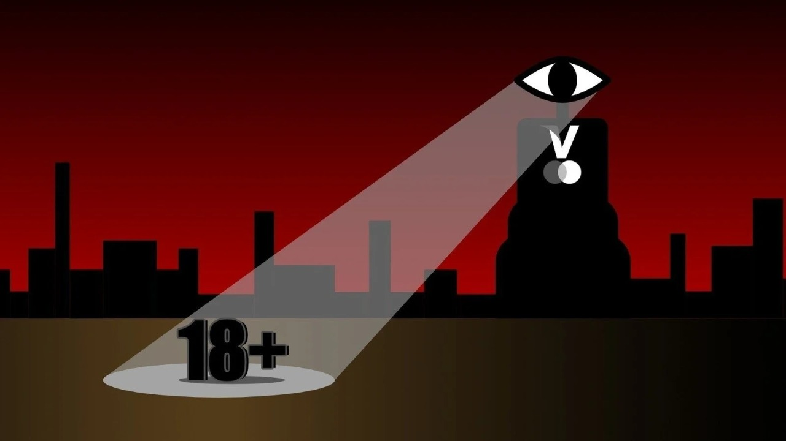

Introduction
This website contains a collection of my posts, mainly in the format of mini-essays on an array of topics related to Ethics in Technology, Digitalization, and data management.
This website contains a collection of my posts, mainly in the format of mini-essays on an array of topics related to Ethics in Technology, Digitalization, and data management.
